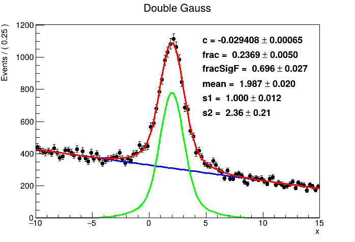
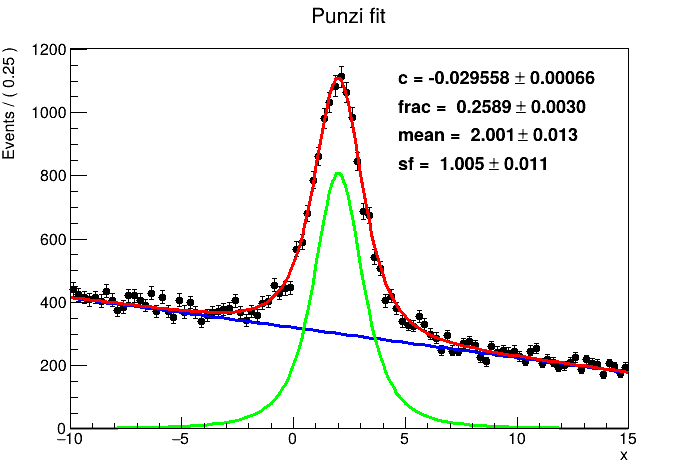

RooFit - Conditional Likelihood
RooFit allows to properly deal with the so called Punzi term, i.e. conditional probability distribution which needs to be carefuly treated when fitting both: variable of interest (x) and the width of its distribution (\(\sigma_x\)).
The following is based on G. Punzi: Comments on Likelihood fits with variable resolution, arXiv.
The lightly commented version is here.
The task is to make a template fit, i.e. the result of a fit is a fraction of signal events, on un-binned data. Let's measure a variable X, which can be caused by two kinds of sources, labeled as signal and background, each having its own pdf.
This is a standard task, however, one can fit not only X-data but also it's errors!
Imagine a physics processes (production mechanisms) that lead by principle to a statistically different uncertainty. One HEP example is b-hadron decay vs random background. Assuming one knows functional form of the uncertainty distribution (i.e. \(\sigma_x\) pdf), one can also use individual uncertainties \(\sigma(x_i)\) for the fit together with \(x_i\) values.
Mathematically:
Event types: S (signal) and B (background)
We assume two templates: pdf(x) for S events, pdf(x) for S events, which are conditional probabilities pdf(x|S) and pdf(x|S).
Law of Total probability gives
$$ P(x) = P(x \mid S) P(S) + P(x \mid B)P(B), $$
where P(S) = probability for result to be a signal event = fraction of signal events in the sample; similarly P(B) being the background event
The Likelihood for unbinned fit is therefore $$ P(x) = f \cdot pdf(x|S) + (1-f) \cdot pdf(x|B) = L(f) $$ where x is substituted by data and the resulting function is Likelihood for fraction \(f\).
Now let's incorporate also the \(\sigma_i\) data, including the distributions for \(\sigma(x_i)\). One measures \(x_i\) together with its \(\sigma_i\), i.e. we need an intersection \(x\) and \(\sigma\): $$ P(x \cap \sigma) = P(x \cap \sigma \mid S) P(S) + P(x \cap \sigma \mid B)P(B), $$ goes to $$ P(x \cap \sigma) = P(x \mid \sigma \cap S) P(\sigma \mid S) P(S) + P(x \mid \sigma \cap B) P(\sigma \mid B) P(B), $$
where terms \(P(\sigma \mid S)\) and \(P(\sigma \mid B)\) are pdf's for \(\sigma(x_i)\), which can not be omitted.
Correspondence with the standard fit is clear: in the case these two pdf's are same: \(P(\sigma \mid S)\) = \(P(\sigma \mid B)\), these terms can be factorized out - and there is no extra information extracted from data by analysing uncertainties.
Excercise 1 - paper example
[C++ code is below]
Variable X is distributed Normally but with different parameters for Signal and Background events.
The task:
- fraction of events set to 1/3
- generate 150 values from Normal distribution, width is constant and same for both S and B, pdf's differ in the mean value.
- perform the template fit
- repeat the generation and the fit 1000-times -> put the fraction into the histogram
Figure 2
- make Fit using Likelihood eq. (1)
- run the scipt: root 'punzi.C(0)'
Figure 3
- generate also \(\sigma_i\) values from Uniform distribution within (1.0 , 3.0)
- make Fit using Likelihood eq. (2)
- run the scipt: root 'punzi.C(4)'
Figure 4
- generate also \(\sigma_i\) values from Uniform distribution: Signal within (1.0 , 1.0), Background within (1.5 , 3.0)
- make Fit using Likelihood eq. (4)
- run the scipt: root 'punzi.C(10)'
- in this case, pay attention to the part, where the Fit actually \(absuses\) the knowledge, whether the event is of type S or B.
Excercise 2 - Real-life example
[C++ code is below]
Following the previous comment, we will now try to avoid \(cheating\) with the knowledge of event types on the real-physics case. The method may be called Side-band fit. Look at the data - there is a Gaussian signal peak and polynomial background. The window for analysis of variable X is chosen wide (-10 , 15) on purpose: on these long sides (side-bands) we get region practically with only background. This is the region where we can perform background-only fit and so bypass the \(cheating\) with event types. So, after the background is fitted on side bands, we can make the final template fit on the whole X range.
Steps in the code / algorithm:
- choose pdf for \(\sigma_x\) (labeled as xErr in the code) for S events = Landau distribution with the params (1.0, 0.2)
- choose pdf for \(\sigma_x\) (labeled as xErr in the code) for B events = Landau distribution with the params (2.0, 0.6)
- choose pdf for \(x\) for S events = Gauss distribution with the params (mean = 1.0, width = xErr)
-
choose pdf for \(x\) for B events = Polynomial distribution with the param (slope) -0.03
-
create conditional pdf for x given xErr:
- generate data
- perform simple x fit:
- perform better x fit:
- perform combined \(x\) and \(\sigma_x\) fit:
- results should look like these:


Mind the statistics of the results:
| LEFT: double Gauss | RIGHT: conditional likelihood (Punzi fit) | ||
|---|---|---|---|
| frac = 0.2369 \(\pm\) 0.0050 | frac = 0.2589 \(\pm\) 0.0030 | ||
| mean = 1.987 \(~\pm\) 0.020 | mean = 2.001 \(~\pm\) 0.013 |
#ifndef __CINT__
#include "RooGlobalFunc.h"
#endif
#include "TROOT.h"
#include "TCanvas.h"
#include "TH1.h"
#include "RooRealVar.h"
#include "RooDataSet.h"
#include "RooGaussian.h"
#include "RooGaussModel.h"
#include "RooConstVar.h"
#include "RooProdPdf.h"
#include "RooHistPdf.h"
#include "RooUniform.h"
#include "RooCategory.h"
#include "RooAddPdf.h"
#include "RooPlot.h"
#include "TCanvas.h"
using namespace RooFit;
using namespace std;
// Macros to ilustrate arXiv:physics/0401045 [physics.data-an]
RooDataSet* generate1(const int &nEvents = 150) {
// Generate data: 1/3 * Gauss(0,1) + 2/3 * Gauss(1,1)
RooRealVar x("x", "x", -10., 10.);
RooRealVar f("f", "f", 1./3.);
RooGaussian gaussA("gaussA", "gaussA", x, RooConst(0.), RooConst(1.));
RooGaussian gaussB("gaussB", "gaussB", x, RooConst(1.), RooConst(1.));
RooAddPdf model("model", "model", RooArgList(gaussA, gaussB), f);
RooDataSet* data = model.generate(x, nEvents);
return data;
}
RooDataSet* generate2(const int &nEvents = 150) {
// Generate data: 1/3 * Gauss(0,sigma(variable, better)) + 2/3 * Gauss(1,sigma(variable, worse))
// Could be 1/3 * signal (better resolution) + 2/3 * background (worse resolution)
RooRealVar x("x", "x", -10., 10.);
RooRealVar xErr("xErr", "xErr", .1, 10.);
RooRealVar f("f", "f", 1./3.);
xErr.setRange(1., 2.);
RooUniform xErrA("xErrA", "xErrA", xErr); // Uniform distribution (1., 2.)
RooHistPdf pdfXErrA("pdfXErrA", "pdfXErrA", xErr, *(xErrA.generate(xErr, f.getVal() * nEvents)->binnedClone())); // PDF from generated histogram
RooGaussModel gaussA("gaussA", "gaussA scaled by per-event error", x, RooConst(0.), xErr, RooConst(1.), RooConst(1.));
RooProdPdf modelA("modelA", "modelA", pdfXErrA, Conditional(gaussA, x));
RooDataSet* dataA = modelA.generate(RooArgSet(x, xErr), f.getVal() * nEvents);
xErr.setRange(1.5, 3.);
RooUniform xErrB("xErrB", "xErrB", xErr); // Uniform distribution (1.5, 3.)
RooHistPdf pdfXErrB("pdfXErrB", "pdfXErrB", xErr, *(xErrB.generate(xErr, nEvents - f.getVal() * nEvents)->binnedClone())); // PDF from generated histogram
// PICK ONE; difference???
// RooGaussian gaussB("gaussB", "gaussB scaled by per-event error", x, RooConst(1.), xErr);
RooGaussModel gaussB("gaussB", "gaussB scaled by per-event error", x, RooConst(1.), xErr, RooConst(1.), RooConst(1.));
RooProdPdf modelB("modelB", "modelB", pdfXErrB, Conditional(gaussB, x));
RooDataSet* dataB = modelB.generate(RooArgSet(x, xErr), nEvents - f.getVal() * nEvents);
RooCategory type("type", "type");
type.defineType("A");
type.defineType("B");
xErr.setRange(.1, 10.);
RooDataSet* data = new RooDataSet("data", "data", RooArgSet(x, xErr), Index(type), Import("A", *dataA), Import("B", *dataB)); // Data = 1/3 * DataA + 2/3 * DataB
delete dataA;
delete dataB;
return data;
}
RooDataSet* generate3(const int &nEvents = 150) {
// Generate data: 1/3 * Gauss(0,sigma(variable, better)) + 2/3 * Gauss(1,sigma(variable, worse))
// Could be 1/3 * signal (better resolution) + 2/3 * background (worse resolution)
RooRealVar x("x", "x", -10., 10.);
RooRealVar xErr("xErr", "xErr", .1, 10.);
RooRealVar f("f", "f", 1./3.);
xErr.setRange(1., 2.);
RooUniform xErrA("xErrA", "xErrA", xErr); // Uniform distribution (1., 2.)
RooHistPdf pdfXErrA("pdfXErrA", "pdfXErrA", xErr, *(xErrA.generate(xErr, f.getVal() * nEvents)->binnedClone())); // PDF from generated histogram
RooGaussModel gaussA("gaussA", "gaussA scaled by per-event error", x, RooConst(0.), xErr, RooConst(1.), RooConst(1.));
RooProdPdf modelA("modelA", "modelA", pdfXErrA, Conditional(gaussA, x));
RooDataSet* dataA = modelA.generate(RooArgSet(x, xErr), f.getVal() * nEvents);
// HERE: this is the only difference wrt generate2: use the same range
xErr.setRange(1., 2.);
RooUniform xErrB("xErrB", "xErrB", xErr); // Uniform distribution (1.5, 3.)
RooHistPdf pdfXErrB("pdfXErrB", "pdfXErrB", xErr, *(xErrB.generate(xErr, nEvents - f.getVal() * nEvents)->binnedClone())); // PDF from generated histogram
// PICK ONE; difference???
// RooGaussian gaussB("gaussB", "gaussB scaled by per-event error", x, RooConst(1.), xErr);
RooGaussModel gaussB("gaussB", "gaussB scaled by per-event error", x, RooConst(1.), xErr, RooConst(1.), RooConst(1.));
RooProdPdf modelB("modelB", "modelB", pdfXErrB, Conditional(gaussB, x));
RooDataSet* dataB = modelB.generate(RooArgSet(x, xErr), nEvents - f.getVal() * nEvents);
RooCategory type("type", "type");
type.defineType("A");
type.defineType("B");
xErr.setRange(.1, 10.);
RooDataSet* data = new RooDataSet("data", "data", RooArgSet(x, xErr), Index(type), Import("A", *dataA), Import("B", *dataB)); // Data = 1/3 * DataA + 2/3 * DataB
delete dataA;
delete dataB;
return data;
}
//=====================================================================================================================
double fit0(RooDataSet* data) {
// Simple fit with double Gauss
// "f" is a parameter of interest
// Model = f * Gauss(0,sigma) + (1-f) * Gauss(1,sigma) - sigma is fixed
RooRealVar x("x", "x", -10., 10.);
RooRealVar f("f", "f", .5, 0., 1.);
RooGaussian gaussA("gaussA", "gaussA", x, RooConst(0.), RooConst(1.));
RooGaussian gaussB("gaussB", "gaussB", x, RooConst(1.), RooConst(1.));
RooAddPdf model("model", "model", RooArgList(gaussA, gaussB), f);
model.fitTo(*data);
delete data;
return f.getVal();
}
double fit1a(RooDataSet* data) {
// Simple fit with double Gauss
// "f" is a parameter of interest
// Model = f * Gauss(0,sigma) + (1-f) * Gauss(1,sigma) - sigma is fitted
RooRealVar x("x", "x", -10., 10.);
RooRealVar f("f", "f", .5, 0., 1.);
RooRealVar xErrFitted("xErrFitted", "xErrFitted", .1, 10.);
RooGaussian gaussA("gaussA", "gaussA", x, RooConst(0.), xErrFitted);
RooGaussian gaussB("gaussB", "gaussB", x, RooConst(1.), xErrFitted);
RooAddPdf model("model", "model", RooArgList(gaussA, gaussB), f);
model.fitTo(*data);
delete data;
return f.getVal();
}
double fit1b(RooDataSet* data) {
// Simple fit with double Gauss
// "f" is a parameter of interest
// Model = f * Gauss(0,sigma) + (1-f) * Gauss(1,sigma) - sigma is fitted
RooRealVar x("x", "x", -10., 10.);
RooRealVar f("f", "f", .5, 0., 1.);
RooRealVar xErr("xErr", "xErr", .1, 10.);
RooGaussian gaussA("gaussA", "gaussA", x, RooConst(0.), xErr);
RooGaussian gaussB("gaussB", "gaussB", x, RooConst(1.), xErr);
RooAddPdf model("model", "model", RooArgList(gaussA, gaussB), f);
model.fitTo(*data);
delete data;
return f.getVal();
}
double fit2(RooDataSet* data) {
// Simple fit with double Gauss
// "f" is a parameter of interest
// Model = f * Gauss(0,sigma) + (1-f) * Gauss(1,sigma) - sigma is fitted
RooRealVar x("x", "x", -10., 10.);
RooRealVar xErr("xErr", "xErr", .1, 10.);
RooRealVar f("f", "f", .5, 0., 1.);
// modification: RooGaussModel can also have scale factors for both parameters; let's set them to 1
RooGaussModel gaussA("gaussA", "gaussA scaled by per-event error", x, RooConst(0.), xErr, RooConst(1.), RooConst(1.));
RooGaussModel gaussB("gaussB", "gaussB scaled by per-event error", x, RooConst(1.), xErr, RooConst(1.), RooConst(1.));
RooAddPdf model("model", "model", RooArgList(gaussA, gaussB), f);
model.fitTo(*data);
delete data;
return f.getVal();
}
double fit3(RooDataSet* data) {
// Same as fit2(), but using RooFit option "ConditionalObservables(xErr)", can be used if "error" type A = "error" type B (not our case)
RooRealVar x("x", "x", -10., 10.);
RooRealVar xErr("xErr", "xErr", .1, 10.);
RooRealVar f("f", "f", .5, 0., 1.);
RooGaussModel gaussA("gaussA", "gaussA scaled by per-event error", x, RooConst(0.), xErr, RooConst(1.), RooConst(1.));
RooGaussModel gaussB("gaussB", "gaussB scaled by per-event error", x, RooConst(1.), xErr, RooConst(1.), RooConst(1.));
RooAddPdf model("model", "model", RooArgList(gaussA, gaussB), f);
model.fitTo(*data, ConditionalObservables(xErr));
delete data;
return f.getVal();
}
double fit4(RooDataSet* data) {
// Fit with double Gauss, each scaled by per-event "error" AND multiplied by PDF of this "error"
// "f" is a parameter of interest
// Model = f * Gauss(0,sigma(variable)) * Uniform(sigma(variable)) + (1-f) * Gauss(1,sigma(variable)) * Uniform(sigma(variable))
// Uniform distribution is not an ideal example here... It's not clear if the term can be factorised out...
// Same as fit2(), but using general distribution of "error", same for type A and type B (not our case)
// Should give the same result as fit3(), ie. not biased, but not precise
RooRealVar x("x", "x", -10., 10.);
RooRealVar xErr("xErr", "xErr", .1, 10.);
RooRealVar f("f", "f", .5, 0., 1.);
RooUniform xErrPdf("xErrPdf", "xErrPdf", xErr);
RooGaussModel gaussA("gaussA", "gaussA scaled by per-event error", x, RooConst(0.), xErr, RooConst(1.), RooConst(1.));
RooGaussModel gaussB("gaussB", "gaussB scaled by per-event error", x, RooConst(1.), xErr, RooConst(1.), RooConst(1.));
RooProdPdf modelA("modelA", "modelA", xErrPdf, Conditional(gaussA, x));
RooProdPdf modelB("modelB", "modelB", xErrPdf, Conditional(gaussB, x));
RooAddPdf model("model", "model", RooArgList(modelA, modelB), f);
model.fitTo(*data);
delete data;
return f.getVal();
}
double fit5(RooDataSet* data) {
// Fit with double Gauss, each scaled by per-event "error" AND multiplied by the *REAL* PDF of this "error"
//"f" is a parameter of interest
// Model = f * Gauss(0,sigma(variable)) * Uniform(sigma(variable, type A)) + (1-f) * Gauss(1,sigma(variable)) * Uniform(sigma(variable, type B))
RooRealVar x("x", "x", -10., 10.);
RooRealVar xErr("xErr", "xErr", .1, 10.);
RooRealVar f("f", "f", .5, 0., 1.);
RooCategory type("type", "type");
type.defineType("A");
type.defineType("B");
// Select type A data and create "Punzi" term (PDF) for xErr, in the real data it could be sideband region method
RooDataSet* dataXErrA = (RooDataSet*)data->reduce(RooArgSet(xErr), "type==type::A");
RooHistPdf xErrPdfA("xErrPdfA", "xErrPdfA", xErr, *dataXErrA->binnedClone());
RooGaussModel gaussA("gaussA", "gaussA scaled by per-event error", x, RooConst(0.), xErr, RooConst(1.), RooConst(1.));
RooProdPdf modelA("modelA", "modelA", xErrPdfA, Conditional(gaussA, x));
// Select type B data and create "Punzi" term (PDF) for xErr, in the real data it could be sideband region method
RooDataSet* dataXErrB = (RooDataSet*)data->reduce(RooArgSet(xErr), "type==type::B");
RooHistPdf xErrPdfB("xErrPdfB", "xErrPdfB", xErr, *dataXErrB->binnedClone());
RooGaussModel gaussB("gaussB", "gaussB scaled by per-event error", x, RooConst(1.), xErr, RooConst(1.), RooConst(1.));
RooProdPdf modelB("modelB", "modelB", xErrPdfB, Conditional(gaussB, x));
RooAddPdf model("model", "model", RooArgList(modelA, modelB), f);
model.fitTo(*data);
delete data;
delete dataXErrA;
delete dataXErrB;
return f.getVal();
}
void punzi(const int &type, const int &nToys = 1000, const int &nEvents = 150) {
TH1F histF("histF", Form("Distribution of \"f\" for example %.0d, #Toys %.0d, #Events %.0d", type, nToys, nEvents), 50, 0., 1.);
for (int i = 0; i < nToys; i++) {
double f;
switch (type) {
case 0: // Paper: Figure 2
f = fit0(generate1(nEvents));
break;
case 1:
f = fit1a(generate1(nEvents));
break;
case 2:
f = fit1b(generate1(nEvents));
break;
case 3:
f = fit1a(generate2(nEvents));
break;
case 4: // Paper: Figure 3
f = fit1b(generate2(nEvents));
break;
case 5: // option 11 first!
f = fit2(generate2(nEvents));
break;
case 6:
f = fit3(generate2(nEvents));
break;
case 7: // compare to option 12 - I see no difference;
f = fit3(generate3(nEvents));
break;
case 8:
f = fit4(generate2(nEvents));
break;
case 9:
f = fit4(generate3(nEvents));
break;
// CORRECT: NOT biased, PRECISE, almost true/generated value (1/3)
// Paper: Figure 4
case 10: // Paper: Figure 4
f = fit5(generate2(nEvents));
break;
case 11:
f = fit1b(generate3(nEvents));
break;
case 12:
f = fit2(generate3(nEvents));
break;
default:
f = 0;
}
histF.Fill( f );
}
TCanvas c1("c1","c1", 800, 600);
histF.Draw();
c1.SaveAs(Form("punzi_example%.0d.png", type));
cout << endl << "====================================" << endl;
cout << "Type = " << type << endl;
cout << "Events = " << nEvents << endl;
cout << "Toys = " << nToys << endl;
cout << "Mean(f) = " << histF.GetMean() << " +/- " << histF.GetMeanError() << endl;
cout << "RMS(f) = " << histF.GetRMS() << endl;
cout << "StdDev(f) = " << histF.GetStdDev() << " +/- " << histF.GetStdDevError() << endl;
cout << "Result = " << histF.GetMean(1) << " +/- " << histF.GetStdDev() << endl;
cout << "====================================" << endl << endl;
// https://root.cern.ch/doc/v610/classRooMinimizer.html
// https://root.cern.ch/doc/master/RooGaussModel_8cxx_source.html -- mean and sigma scale factors multiply it
// https://root.cern.ch/root/html534/RooProdPdf.html -- example for conditional prob. F(x,y) G(y)
}
#ifndef __CINT__
#include "RooGlobalFunc.h"
#endif
#include "RooRealVar.h"
#include "RooDataSet.h"
#include "RooGaussian.h"
#include "RooGaussModel.h"
#include "RooPolynomial.h"
#include "RooConstVar.h"
#include "RooLandau.h"
#include "RooProdPdf.h"
#include "RooHistPdf.h"
#include "RooCategory.h"
#include "RooAddPdf.h"
#include "RooPlot.h"
#include "TCanvas.h"
#include "TROOT.h"
#include "TH1.h"
using namespace RooFit ;
using namespace std;
// Macros to ilustrate arXiv:physics/0401045 [physics.data-an]
// to run this:
//
// root 'punzi_landau.C(1)'
void punzi_landau(const int &fittype, const TString &file = "out.png") {
RooRealVar x("x", "x", -10., 15.);
RooRealVar xErr("xErr", "xErr", .1, 10.);
RooGaussModel genGauss("genGauss", "genGauss", x, RooConst(2.), xErr, RooConst(1.), RooConst(1.));
// RooGaussian genGauss("genGauss", "genGauss", x, RooConst(2.), xErr);
RooLandau genLandauSig("genLSig", "genLSig", xErr, RooConst(1.), RooConst(.2));
RooDataHist* histXErrSig = genLandauSig.generate(xErr, 10000)->binnedClone();
RooHistPdf pdfXErrSig("pdfXErrSig", "pdfXErrSig", xErr, *histXErrSig);
RooProdPdf genModelSig("genModelSig", "genModelSig", pdfXErrSig, Conditional(genGauss, x));
RooDataSet* dataSig = genModelSig.generate(RooArgSet(x, xErr), 10000);
// (dataSig->createHistogram(x,xErr))->Draw("colz") ;
RooLandau genLandauBck("genLandauBck", "genLandauBck", xErr, RooConst(2.), RooConst(.6));
RooDataHist* histXErrBck = genLandauBck.generate(xErr, 10000)->binnedClone();
RooHistPdf pdfXErrBck("pdfXErrBck", "pdfXErrBck", xErr, *histXErrBck);
RooPolynomial genPol("genPol", "genPol", x, RooConst(-0.03));
RooProdPdf genModelBck("genModelBck", "genModelBck", pdfXErrBck, Conditional(genPol, x));
RooDataSet* dataBck = genModelBck.generate(RooArgSet(x, xErr), 30000);
RooCategory type("type", "type");
type.defineType("signal");
type.defineType("background");
RooDataSet* data = new RooDataSet("data", "data", RooArgSet(x, xErr), Index(type), Import("signal", *dataSig), Import("background", *dataBck));
//===================================================================================
if(fittype == 1){
// SINGLE GAUSS FIT
RooRealVar mean("mean", "mean", 0., -10., 10.);
RooRealVar sf("sf", "sf", 1., .5, 5.);
RooGaussModel sig("gauss", "gauss", x, mean, xErr, RooConst(1.), sf);
// bck: linear with unknown slope cF
RooRealVar c("c", "c", -1., 1.);
RooPolynomial bck("pol", "pol", x, c);
RooRealVar frac("frac", "frac", 0., 1.);
RooAddPdf model("model", "model", RooArgSet(sig, bck), frac);
RooPlot* fX = x.frame(Title("Fit of x"));
model.fitTo(*data);
// will this improve it??
// model.fitTo(*data, ConditionalObservables(xErr));
data->plotOn(fX);
model.paramOn(fX, Layout(.54, .99, .92));
model.plotOn(fX);
model.plotOn(fX, ProjWData(*data), LineColor(kRed));
fX->Draw();
}
//===================================================================================
if(fittype == 2){
// DOUBLE GAUSS FIT
//===============================
RooRealVar mean("mean", "mean", 0., -10., 10.);
RooRealVar sigma1("s1", "s1", 1., 1., 10.);
RooRealVar sigma2("s2", "s2", 5., 1., 10.);
RooRealVar fracSigF("fracSigF", "fracSigF", .2, 0., 1.); // ratio 1 to 2 gauss
RooGaussian sigF1("sigF1", "sigF1", x, mean, sigma1);
RooGaussian sigF2("sigF2", "sigF2", x, mean, sigma2);
RooAddPdf sigF("sigF", "sigF", RooArgSet(sigF1, sigF2), fracSigF);
// bck: linear with unknown slope cF
RooRealVar c("c", "c", -1., 1.);
RooPolynomial bck("bck", "bck", x, c);
RooRealVar frac("frac", "frac", 0., 1.);
RooAddPdf model("model", "model", RooArgSet(sigF, bck), frac);
RooPlot* fX = x.frame(Title("Double Gauss"));
model.fitTo(*data);
data->plotOn(fX);
model.paramOn(fX, Layout(.54, .99, .92));
model.plotOn(fX, Components(bck), LineColor(kBlue));
model.plotOn(fX, Components(sigF), LineColor(kGreen));
model.plotOn(fX, LineColor(kRed));
fX->Draw();
}
//===================================================================================
if(fittype == 3){
// PUNZI - finally!
// parametry Landaua pro signal
RooRealVar aSig("aSig", "aSig", .1, 5.);
RooRealVar bSig("bSig", "bSig", .1, 5.);
// parametry Landaua pro background
RooRealVar aBck("aBck", "aBck", .1, 5.);
RooRealVar bBck("bBck", "bBck", .1, 5.);
RooRealVar frac("frac", "frac", 0., 1.);
RooLandau lanSig("lanSig", "lanSig", xErr, aSig, bSig);
RooLandau lanBck("lanBck", "lanBck", xErr, aBck, bBck);
RooLandau lanSB("lanSB" , "lanSB", xErr, aBck, bBck); // SideBands
RooAddPdf punziLandau("punziLandau", "punziLandau", RooArgSet(lanSig, lanBck), frac);
RooDataSet* dataSB = (RooDataSet*)data->reduce("x < -2. || x > 10");
//now we fit the params of Landau for Background
lanSB.fitTo(*dataSB);
aBck.setConstant();
bBck.setConstant();
//now we fit the remaining data(errors) - both signal and bkg.; params for bkg is fixed;
punziLandau.fitTo(*data);
aSig.setConstant();
bSig.setConstant();
RooRealVar mean("mean", "mean", 0., -10., 10.);
RooRealVar sf("sf", "sf", 1., .5, 5.);
RooGaussModel gauss("gauss", "gauss", x, mean, xErr, RooConst(1.), sf);
RooProdPdf sig("sig", "sig", lanSig, Conditional(gauss, x));
// TRY IT without the "Conditional"
// RooProdPdf sig("sig", "sig", lanSig, gauss);
RooRealVar c("c", "c", -1., 1.);
RooPolynomial pol("pol", "pol", x, c);
RooProdPdf bck("bck", "bck", lanBck, Conditional(pol, x));
// TRY IT without the "Conditional"
// RooProdPdf bck("bck", "bck", lanBck, pol));
RooAddPdf model("model", "model", RooArgSet(sig, bck), frac);
RooPlot* fX = x.frame(Title("Punzi fit"));
model.fitTo(*data);
data->plotOn(fX);
model.paramOn(fX, Layout(.54, .99, .92));
model.plotOn(fX, Components(bck), LineColor(kBlue));
model.plotOn(fX, Components(sig), LineColor(kGreen));
model.plotOn(fX, LineColor(kRed));
//TODO: what ProjWData does??
// model.plotOn(fX);
// model.plotOn(fX, ProjWData(*data), LineColor(kRed));
fX->Draw();
}
// TCanvas canvas1("canvas1","canvas1", 600, 400);
// if ( ! file.IsNull() ) canvas1.SaveAs(file);
}